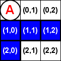
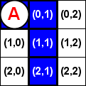
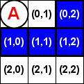
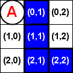
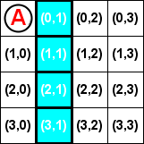
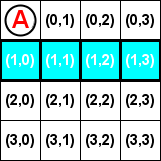

So far yout should have a TetrisPiece that starts out in one orientation and can be moved around using the keyboard. It's time to give the TetrisPiece the ability to rotate, as it's a large part of the game of Tetris.
Our Goals:
- Add the ability for a TetrisPiece to rotate
- Modify the TetrisController so that hitting the spacebar causes the piece to
rotate
A TetrisPiece is set up in a specific way to aid rotation. Each Block has a Location that is based on an anchor Location. When a piece rotates, all of the Blocks have their locations change to represent a new orientation.




Each Block's new Location can be calculated using the starting location, and the size of the grid that it belongs to. It's easier to see the pattern if we choose a simpler piece. The piece below is known as an "I" piece and it has a size of 4.


It may look like some pieces stay in the same spot, but that's not true. It's just that another Block has moved into the same spot.
| Starting Row: | Starting Column: | Ending Row: | Ending Column: |
| 0 | 1 | 1 | 3 |
| 1 | 1 | 1 | 2 |
| 2 | 1 | 1 | 1 |
| 3 | 1 | 1 | 0 |
The ending row is simple to determine. It is exactly the same as the starting column. The ending column may be found using a combination of the size of the grid (in this case it's 4, but it isn't always) and the starting row.
Add a method to the TetrisPiece class named rotClock(). The job of this method will be to loop through all the Blocks in the TetrisPiece, get their initial Location, and set their location to a new Location that's based on the initial Location.
After you've added rotClock, add the following method:
public void rotate()
{
this.rotClock();
}
This method is the main rotation method for the TetrisPiece. Whenever we want a piece to rotate, we will do a clockwise rotation.
public static void rotTester()
{
TetrisPiece piece = new TetrisPiece(null);
System.out.println(piece);
piece.rotate();
System.out.println("\n"+piece);
}
TetrisPiece:
Block at Loc(1, 0) with Color[R:0 G:0 B:255]
Block at Loc(1, 1) with Color[R:0 G:0 B:255]
Block at Loc(1, 2) with Color[R:0 G:0 B:255]
Block at Loc(2, 0) with Color[R:0 G:0 B:255]
TetrisPiece:
Block at Loc(0, 1) with Color[R:0 G:0 B:255]
Block at Loc(1, 1) with Color[R:0 G:0 B:255]
Block at Loc(2, 1) with Color[R:0 G:0 B:255]
Block at Loc(0, 0) with Color[R:0 G:0 B:255]
Now that we've set it up so that the model can rotate it should be relatively simple to connect it to the spacebar.
In the TetrisController's onKeyPress method you should be already doing things if the incoming key code is any of the arrow keys. Add more to the method so that if the keycode is 32 (spacebar), the piece's rotate method gets called.
Run the Tetris program. Again the piece should be there and movable using the arrow keys, but this time the spacebar should cause the piece to rotate. Make sure that it rotates properly to all 4 positions before continuing.